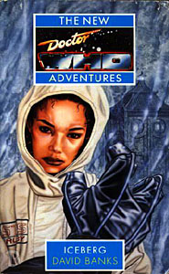

|
Iceberg
|
BASIC PLOT DOCTOR COMPANIONS MATERIALISATION CIRCUIT Pg 158 The Jade Pagoda materialises in exactly the same place it did in The Tenth Planet (the base has moved, due to shifting ice, but Pg 159 makes it clear that the TARDIS is exactly where it was before). Pg 190 The TARDIS, now looking Blue and Police-Box-like again, materialises once again on the SS Elysium. Pg 224 The TARDIS has arrived at the Cyber base under the Antarctic. Pg 245 The TARDIS once again returns to the SS Elysium. PREPARATORY READING CONTINUITY REFERENCES "From a hoarding overlooking St Paul's, a giant face smiled down, one eyebrow raised: Tobias Vaughn, IE's managing director." The Invasion - and Tobias Vaughn's eyebrow twitch/squint thing was quite a feature in that story (particularly the amusing moment in Episode Seven when it swaps eyes for a while). "UNIFORMITY. DUPLICATION. IE. THE SECRET OF SUCCESS." A less than subtle Cyberman allegory, and not for the last time in this book. Pg 3 Jacqui looks at an insect: "Against her dark skin, the exo-shell glowed like ruby." Lots of this book involves recurring imagery, set up early on here with a forward mention of the name of Jacqui's future child. The insect is also a metaphor for the Cybermen. Pg 4 "Somewhere, Jacqui could hear a distant hum." This is the Cybermen's hypnotic beam from The Invasion. This chapter is one-person's view of that particular occasion. "The words mingled weakly with the sounds of the street: Goodbye, Ruby Tuesday." Another appearance of the word 'Ruby' and a reference to the famous Rolling Stones song. Pg 5 "St Paul's Churchyard. The name expanded in her mind, gave way to horrid images. Decayed bodies stacked under slabs of pavement. Eyeless zombies walking stiffly through the crypt." A symbolic representation of what is about to happen when the Cybermen burst from the sewers in The Invasion. "Nothing moved in London. Silence settled over the city like a shroud." The Cybermen's signal has achieved its effect. "She did not hear the clatter of the heavy manhole cover as it was flung aside, yielding to some upward force. She did not see the mindless zombies marching down the steps of the cathedral, their gleaming metal surfaces glinting in the sun." And that moment from The Invasion now happens. "All areas now covered by our transmissions. All humans under our control." The next few pages show the progress of the last three episodes of The Invasion from the Cyber Controller's point of view, in particular the existence, launch and eventual destruction of the fleet hidden on the dark side of the moon. Pg 12 "They were horrid flying monkeys - buzzy buggy flies - lots and lots of them swarming through the sky and they were chasing the grown-up girl and her funny friends and her poor little dog who were running away as fast as they could through the dark tangly wood." A two-year-old Ruby is watching The Wizard of Oz, which informs much of the imagery throughout the book, although I'll be damned if I could explain why that's the case. (For a different perspective on The Wizard of Oz, try and catch the musical Wicked - it's quite marvellous.) Pg 13 "Then the screams stopped. Ruby looked up. The TV-screen was blank-blue with some white letters on. 'Here is a news flash,' said an important voice." The news flash is announcing the Cyberman invasion in The Tenth Planet. The blank-blue screen sounds like Windows NT has just crashed. "She knew her idea was good. Romantic fiction with a hard scientific edge." This could describe some aspects of Doctor Who, or may reference any number of science-fiction book series. The one that springs instantly to mind is Kim Stanley Robinson's Red Mars etc series (which Beige Planet Mars was an homage to). Pg 15 "Fuck you, mate! Just fuck you, you fucking wanker!" Goodness me. We're eight books on from Transit, which was the first to feature gratuitous swearing in Doctor Who, but even that didn't achieve this concentration of 'fuck's. Not the greatest line in the novel, it has to be said. Amusingly, the next two sentences are: "There was no doubting the strength of feeling in the biker. He was angry." Um, thanks for making that utterly, absolutely, crystal clear for us, David. Pgs 15-16 "In the light of the passing showroom windows, he made out the picture of a grim looking iceberg which covered most of the front page. It was the latest metaphor for a mysterious disease that some believed might become a pandemic, a latter-day plague. Those affected now were presented as just the tip of the iceberg." I actually remember that newspaper image (it became an advertising campaign about STDs in Britain), and the disease in question, perhaps obviously, is AIDS. The metaphor of the iceberg, something which only shows one-tenth of its existence, is used throughout this book. Probably irrelevantly, the iceberg which sunk the Titanic appears in The Left-Handed Hummingbird. Pg 16 Newspaper headline: "TENTH PLANET SIGHTED". Indeed. The Tenth Planet. Pg 17 "Observers at Geneva's Snowcap Tracking Station in Antarctica have now confirmed..." The setting for The Tenth Planet. Pg 19 "She [Pam] had a brother, Terry, who was now a pilot for the ISC." Terry appears in The Tenth Planet. Also lots of references to Pam's father, General Cutler of The Tenth Planet. Originally, this novel was going to feature Terry in Pam's role, until Banks was informed that Terry had died in The Tenth Planet. By the time he'd discovered that Terry hadn't died in that story, he'd already changed the character to his sister. Pg 20 "He [General Cutler] was running the Snowcap Tracking Station for ISC." Indeed. The Tenth Planet again. "GENERAL CUTLER KILLED IN ACTION AT STS GENEVA BASE ANTARCTICA 1120 HOURS TODAY 22 DEC 86 REGRET FURTHER DETAILS WITHHELD" We know what happened, of course, because we saw it in The Tenth Planet. Pg 21 "But it was an iceberg. What he saw was but one-tenth its true size." The iceberg metaphor continues. Pg 22 "Hey, what if it had gone Chernobyl? The Russian reactor had exploded in, when was it, April that year." This is a neat tie-in between the real world and the Who one. Pg 23 "Seek out abandoned landing craft. IMMEDIATE. Removable components to be extracted and retrieved. Mechanimate remains to be examined. Undamaged elements to be recycled." I bet you'd always wondered what happened to the Cyberman ship after The Tenth Planet ended, hadn't you? Pg 24 "He had warned his companions. He might be away some time." This is a reference to Ace and Bernice, who have been left to fend for themselves in Birthright. The 'away some time' line is a vague reference to Captain Oates, a member of Scott's expedition to the Antarctic who killed himself to save the others by going out for 'a short walk. I may be some time.' Pg 25 "The UN's southern polar base was almost fully hidden, excavated out of solid ice. The shabby ventilation shaft, which doubled as the entrance to the base, stood out against the pristine white of its surroundings." This is a return to the location of The Tenth Planet, 20 years later, almost to the day. Pg 31 "Now, colonel, tomorrow you must continue with your history of base [sic]. I find it fascinating. I want to know about the Z-bomb." The Z-bomb was an important plot point in The Tenth Planet. Pam Cutler's inability to construct a complete sentence is presumably something to do with her army training. Pg 32 "'Impossible in not in my vocabulary,' muttered Pamela Cutler." She's quoting her father, and it's possible he did say this during the course of The Tenth Planet. Pg 34 "It's what her brother Terry would be reminded of if he'd been witness to it. The Rapture." Terry, once again, from The Tenth Planet. Presumably this is just a figure of speech and not a reference to the fairly dire Doctor Who audio adventure. Pg 37 "Air pollution was high that morning. Fortunately she had checked on the DoE line the expected levels of low-lying ozone and nitrogen dioxide before she had set out for Canary Wharf Dock." Much of the pollution-high, corrupted Earth backdrop for this novel owes its origins in Cat's Cradle: Warhead. See also The Year 2006 below. Six years before this novel's setting, Canary Wharf was relevant in Millennial Rites. Pg 38 The Elysium is about to take its passengers on an Over the Rainbow cruise, in another Wizard of Oz reference. The vast majority of the chapter titles are also drawn from this film. I still don't really understand why. Pg 42 "Well, no one was sharing with her, thank Gaia." The 'Mother Earth' thing was something that many of the NAs were concerned with. However, this is quite possibly a very clever forward reference to the 'thank the Goddess' comments which pepper the human race in about 500 years time and which still appear with regularity in the Bernice Summerfield oeuvre. Pg 43 "She pulled the Nanocom from her pocket. It was about the size of a cigarette pack, matt black. There were three coloured nodules on one of the edges, blue, white and red." Nano bears a startling similarity to 'Box' in the BBC series Star Cops, although it's rather smaller. Both are black boxes with coloured lights on one end. Both are prototypes and both are never seen again. Interestingly, Nathan Spring's 'Box', in Star Cops, was designed by his father, an expert computer programmer, while Ruby's father is an expert computer programmer. Pg 45 "The Over the Rainbow cruise, brainchild of Sunday Seeker publisher Lord Stanley Straker, will encourage 'cheer and optimism in the face of increasing doom.' The words are his." This, again, is the increasing doom of the world dreamed up in Cat's Cradle: Warhead. "The SS Elysium started life way back in 1958 as the SS Bermuda, but was laid up in 1974 when the quadrupling of oil prices made it uneconomic." There was an SS Bermuda in the 1860s, and there is one now, but I can't find a reference to one in the 1950s. Pg 46 "They can also forget the continuing famine, drought, war and 'plague'" These are nearly the four horsemen of the Apocalypse. 'Plague' is in inverted commas because it still refers to AIDS, and no one can make their mind up whether it's a plague or not. (Strictly speaking, in the real world, it's not, as plague has a specific definition to do with proportion of the population who are infected, which AIDS remains well under.) Pg 48 In the heart of the TARDIS, the Doctor comes across some pets: "Black huddled bodies of upside-down bats were hanging from rusty pipes in sleeping clumps." We saw such bats in the Telemovie, although they were much closer to the control room of the TARDIS then. One assumes they were all wiped out when the TARDIS was destroyed in The Shadows of Avalon (or when the fusion bomb destroyed much of the TARDIS interior in The Gallifrey Chronicles). Pg 56 "'For these trees to have survived they would have needed -' 'Summer temperatures 15 degrees higher than we have at the moment,' interrupted the general." We saw the Antarctic tropical rainforests of the distant past in The Taking of Planet 5. Pg 62 "Earth, she pointed out, could be transformed into a hothouse that would make the present threat of global warming seem infinitely preferable. Or just as devastating, we could be catapulted into another ice age." The question of whether the Earth will freeze or boil is still hotly debated today. There's a theory that the rising temperatures causing the icecaps to melt will desalinate the Arctic, which is what prevents Europe from being nearly as cold as it should be. This could plunge much of the northern hemisphere into a premature ice age. Indeed, the fossil record suggests that precisely this has happened before. In the Who universe, it'll be nearly another thousand years before the next ice age: see The Ice Warriors. Pg 66 "She was gaining a useful reputation as an investigative reporter. Her last scoop was to uncover a gun-running scam at the heart of a Government organization. That had started a real scandal. In fact, it was probably sensible that she was getting out of the country for a few months." Ruby's background is not dissimilar to what we know of Sarah Jane Smith's in the current Big Finish audio series and Bullet Time. In fact, it's surprising that the two of them haven't met. Pg 68 "Of course the search was now on to extend the span of life of those alive now. Gene manipulation, organ transplants, bodily augmentation, cryogenics." Another, rather more sinister, example is going on in Cat's Cradle: Warhead, which is itself referred to later in the novel. Pg 74 "The video rooms played endless re-runs of vintage films and TV series for the fan clubs and sci-fi organizations which had taken advantage of Lord Straker's 'club class' rates." And, if they're really lucky, he'll have organized it so that they can catch the broadcast of the 2006 Doctor Who Christmas special. In fact, "younger wrinklies expressed themselves with words like 'Wicked!', 'Ace!' and 'Bad'", so it seems that Straker's only managed to get hold of the McCoy DVDs. Cheapskate. Pg 75 The rather lovely Andrew Motion poem, In Broad Daylight, refers, in this case, to the current state of the Doctor and his relationship with his companions: "The lives I trusted, even my own, collapse, break off, or don't belong [...] All except you, your life like a cloud. I am lost in now and will never be found." Pg 76 "I knew Sartre was an existentialist so told the joke I'd read on the wall of the ladies toilets at the BBC." David Banks worked at the BBC, so this is possibly absolute fact. What he was doing in the ladies' toilets, however, is anyone's guess. "He told me he was in discussion now with an organization which was looking into the possibility of creating virtual immortality." Cat's Cradle: Warhead, one presumes. "Things were really falling apart, I said. The centre could not hold." This is a paraphrase of the opening of WB Yeat's poem, The Second Coming, itself a rich resource for sci-fi writers everywhere. The poem is also quoted in the Babylon 5 episode Revelations, and gives the title to the Angel episode Slouching Toward Bethlehem, among various other appearances in the genre. Which is perhaps odd, given that the reference in the poem is to the collapse of the British Empire. Pg 87 Reference to Isobel Watkins, from The Invasion. Pg 88 Reference to UNIT and the Brigadier by name, as well as the Second Doctor, Jamie and Zoe by description, as we get another brief summary of The Invasion and The Tenth Planet. Pg 89 "And when it was over they returned to their time-machine which was invisible and parked in a country field and simply vanished." The TARDIS was invisible in The Invasion, and this is the end of Episode Eight of that story. "What struck me, though, was her conviction. She believed absolutely in what she said. I'm not saying I believed her. Just that she was convinced that the creatures she photographed were real." There's something quite nice about the idea that Isobel, who went through such pains to get those photographs back in The Invasion, got them perfectly and yet no one believed her. Pg 90 "'Well, the appearance of that planet, or meteoroid, or whatever it was, happened to coincide with a number of sightings of UFOs and encounters with EBEs.' 'EBEs?' queried Diana, listlessly. 'Sorry. Extraterrestrial Beings.'" Anyone who's seen the X-Files episode EBE, knows that it doesn't stand for that at all (it's 'Extraterrestrial Biological Entity') but we assume Ruby's translating the acronym rather than expanding it. This also refers to The Tenth Planet and, potentially numerous other adventures, as loads of alien races seemed to invade in the late twentieth century. Pg 93 "The author of the book was a man she had not heard of. Norbert Wiener. The book was entitled Communication and Control in the Animal and Machine." This is the book which introduced the term 'cybernetics' to the English language, as Banks states in his introduction to this very novel. Pg 94 Along other such nonsense psychobabble from Barbara, we get the phrase "Time is in the vortex of energies between us." Well, there is a vortex through which one can travel in time, apparently. Pg 96 "The ship was a time machine. It was taking her into the future. But the future was behind her. She had her back to it. She could have no idea what it held. Blank whiteness, perhaps." I could well be seeing things here, but the level of symbolism here is so intense, I may not be. So therefore, the 'blank whiteness' referenced here, as well as being the icebergs of the title and Antarctica, may also refer to the closing flash of blank whiteness at the end of the Seasons 18-23 closing credit sequences. Or it may not. Pg 97 "As Ruby looked upon the star she made a wish. She wished never to go back. She wished to be taken away. She wished to be whooshed away to a totally different world." This is, in fact, exactly what happened to Ace. More recently, Charley, in the Eighth Doctor audios, has been equated to Peter Pan, which gives us another wishing upon a star reference (the Author's note on the audio Neverland makes this absolutely clear). The desire, although unspoken here (and unknown - she hasn't met him yet), is clearly to become the Doctor's companion, the wish of many youngsters who watched the programme. I still can't work out at the moment whether Banks was trying to create a new companion for the NAs, or deliberately trying to create someone who wasn't going to be one. Pg 103 Reference to the First Doctor and the events of The Tenth Planet. Also to the Doctor's friends, "a couple of Londoners" (Ben and Polly). In the aftermath to the Tenth Planet, the rescue crew found "pieces of piping, plastic vents, hoops of metal, thick-soled boots" all of which was like "aluminium foil gets when you put it in a flame. Flaky and fragile." The remains of the Tenth Planet Cybermen. Pg 104 Hilliard narrates events following the Tenth Planet, including his visit to the Cybership, which resembled "a giant primus stove? A huge cake tin? Some kind of spacecraft, anyway. That was obvious." In it he finds a creature: "It looked like a man, but taller. It was obviously dead. [...] It was dressed in a silver one-piece suit, wrapped in some kind of polythene cover. There were metal hoops over the arms and legs - just like the hoops we'd been finding in the snow. On the head was this lamp-like thing and - this'll sound bizarre - it was set on tubes coming out of the ears." Sounds like a Tenth Planet Cyberman to me. "The flesh was yellow, kind of ancient-looking." This makes sense, given what we know of the Tenth Planet Cybermen origins, but we have no way of confirming the colour as the story was made in black and white. Pg 105 There is another description of a Tenth Planet Cyberman, after its power source has been depleted. Pg 113 "The face of his first enfleshment." Rarely has there been a more disturbing term for 'incarnation'. "A silver figure in a snow scene, collapsing, shrivelling. His face, his own first face, shrivelling, collapsing. His body, aged and disintegrating, falling into the snow, dissolving, becoming only dimly visible, falling apart like thawing ice." Despite the overload of symbolism, this is a memory of the regeneration sequence in The Tenth Planet, but the parallels between the collapsing Cybermen and the collapsing Doctor are rather clever, and it's a fairly good description of what that first regeneration sequence looked like on screen. Pg 114 "His hand went to his head, removed his hat, dropped it over the topmost roof of the control column tower." This is something that David Banks did on the only night that he played the Doctor in the Musical Stage Play (he was understudy for the lead role and had to fill in when Jon Pertwee became ill). Pg 134 "It detailed the long journey from Planet 14." In The Invasion, the Cybermen recognised the Doctor and Jamie from an (unrecorded) adventure on Planet 14. The Comic Strip, The World Shapers, purported to suggest that this planet was Marinus, on which an aging Jamie MacCrimmon (who dies as the end of the story) and the Sixth Doctor met the Voord, who became the Cybermen. No, I don't buy that either. In Banks' 'non-fiction' Cyberman book, Planet 14 is where the Cybermen who did not travel onwards with Mondas as it left the solar system emigrated to, before their various invasion attempts in the late twentieth and then twenty-first centuries. "Thousands of years ago, the Co-ordinator had belonged to the Faction, the Mondan sect who wanted fully to embrace the logic of the cybernetic way." This is another theory from Banks' Cyberman book. Pg 135 features yet another retelling of the events of The Tenth Planet, from yet another point of view. Pg 142 "The male black was much larger. Promising material for experiment." Bono, who eventually becomes the new CyberController, is possibly a deliberate riff on Toberman, from The Tomb of the Cybermen. "A dim memory came to mind. He had once landed the TARDIS momentarily in the middle of a cricket game at Lord's one Earth summer during the 1950s. Something to do with Daleks, he was sure." Indeed it was. This was during The Daleks' Master Plan. The ship was built in the 1950s, which is why the Doctor suddenly has this memory. Quite why he still thinks it's the 1950s when confronted with the technology of 2006, remains unexplained. Pg 143 "After a thousand years..." This is an approximation of the Doctor's age, but it's very close. He will go on to pass his one thousandth birthday during Set Piece, as SLEEPY makes clear. Pg 147 The Doctor mistakes Ruby for Kadiatu Lethbridge-Stewart, from Transit (and, later, Set Piece, The Also People, Happy Endings, So Vile a Sin and The Dying Days). Pg 154 "An electric arc crackled between them." This is consistent with Cyber weapons of the Cybermen in question. Pg 156 "Someone in the main control room has been messing about with the TVG." That's the Time Vector Generator, and it's currently happening in Birthright. Pg 157 "Probably something to do with my travelling companions. They're in a different spatiotemporal dimension, at the moment. Two different dimensions, I imagine." Birthright again. Pg 159 "'From Dave's description,' she said, 'I would have expected an older man.' 'Ah, yes. I was older then. That must sound odd, I know, but I was at the end of my first incarnation. My body was wearing a bit thin. That's how I put it then, anyway.'" The Tenth Planet, and featuring a paraphrase of a quote from that story. "The Doctor was pleased with himself. His memory had sharpened up. They were talking about the earlier days, of course." This may just possibly refer to the Doctor burying his current persona into his first one during the course of Love and War, not all that long ago, which may explain why his memories are better of that time than now. "'Mind you,' he continued, 'that incarnation lasted pretty well. Longer than the other six.'" Indeed, although given that, in The Tomb of Cybermen, the Doctor gives his age as 450, not by as much as we might have suspected. "'Actually, he was rather rude. He called me Grandad, I remember, and when I said I didn't like his tone, he replied that he didn't like my face - or my hair. Come to think of it my hair was pretty awful then." The Tenth Planet again. Pg 166 "The flesh was zipped shut to chest level. There the flaps of skin gaped partly open. Beneath could be seen the rib cage, white bones reinforced by shiny steel. And within the cavity was the glint of other mechanical parts, replacement heart and lungs perhaps." Doctor Who does body horror. There are similarities here to the Cyber conversion process in Attack of the Cybermen and Killing Ground. Pg 167 Description of the Cybermen includes "From throat to groin was an obvious zip." It takes a good deal of chutzpah to make a plot point out of 1960s costume design limitation. Pg 170 "It came flooding back to her. All the outrageous claims that Isobel Watkins had made." The Invasion again. Pg 171 "The voice [of the Co-ordinator] emerged from something else. From a machine. A tangle of wires and flashing lights." This is similar to the Co-ordinator as seen in The Invasion. Pg 176 "'Was that you, roaring like a lion?' 'I thought it might create a distraction.'" The Doctor's ability to mimic the local fauna was also seen in Silver Nemesis. Pg 177 "'How do you know the way?' 'The sign of the beast.' She looked at him quizzically. He pointed to a three-clawed scratch mark on the wall. Then he produced something from his jacket. A small pocket knife. He made scraping actions with it in the air. One, two, three." It may be irrelevant, but this is what Alister Pearson did to his portrait of the Doctor and Ace for the front cover of the novelization of Survival, in order to make the slash marks appear real. Pg 178 "'You've come across the Cybermen before?' she asked, 'Oh yes, several times. And now, as then, they must be fought.'" A misquote of the famous speech from The Moonbase. Pg 180 "She couldn't understand how he wasn't frozen stiff. Though to judge from his appearance he soon might be." The Doctor has demonstrated resistance to cold in the past (The Seeds of Doom and the vacuum of space in Four to Doomsday), but The Tenth Planet itself suggests that this resistance does not last long. Pg 184 "It was almost as if there were two hearts beating inside him, not quite in unison." And that is the case. Pg 185 As Leslie, nervous of his Tin Man suit goes on, "He had made sure there was somebody standing in the wings with a screwdriver, just in case." Doesn't this sound just like the Doctor? Pg 186 "He wore her heavy multicoloured coat with pleasure. It was warm and it reminded him of a coat he used to wear in a previous incarnation." The coat of the Sixth Doctor. Wasn't it lovely? "Yes, he'd known the young photographer, Isobel Watkins. She and Zoe had been great friends. Zoe was his travelling companion at the time, the genius at maths. The guy in the kilt had been called Jamie. The Doctor had picked him up at the Battle of Culloden." The Invasion and reference to The Highlanders. "There was an invasion one summer in the 1970s. In fact, it was Zoe's mathematical skill which had destroyed the Cyber invasion fleet." The Invasion, and note that the date is still kept deliberately obscure so as not to further confuse UNIT dating (modulo the fact that it didn't take place in the sixties). "The Doctor had also been involved in the 1986 invasion." The Tenth Planet. "He rattled off a list of names. Tobias Vaughn. She had heard of him." The Invasion. "Then there was Ringhead or Ringway from the twenty-sixth century." Earthshock, and it was Ringway. Pg 194 "There, less than fifty metres from the ship, an iceberg loomed." The symbolism is straight out of the Titanic story, but one wonders if the Doctor recalled this moment during The Left-Handed Hummingbird. Pg 213 "There had been so many times when everything had seemed to be lost. When those who were his companions were close to despair. When those who had depended upon his greater knowledge, had felt their trust in him betrayed. There were times when he had betrayed them." Relevantly, among others, The Curse of Fenric and Love and War. Pg 215 "He called to mind other companions from Earth whom it had been his privilege to know: Zoe, Sarah Jane, Polly, Victoria, Kadiatu." Interesting collection, and certainly not complete. The Wheel in Space to The War Games; The Time Warrior to The Hand of Fear; The War Machines to The Faceless Ones; The Evil of the Daleks to Fury From the Deep plus Downtime; Transit and more to come. Pg 216 "'Things will get better, you know,' he said. A still small voice." The phrase 'O still, small voice of calm' comes from the hymn 'Dear Lord and Father of Mankind,' and refers in that case, quite directly, to God. Pg 217 "I'd be approaching my second millennium." As mentioned above, the Doctor will reach his one thousandth birthday during Set Piece. This doesn't quite square with the new series. Pg 220 "'You will meet the Cyber Controller.' 'Oh, yes?' said the Doctor with some surprise. 'I thought he wasn't invented yet.'" This book itself appears to create the Cyber Controller that we see in The Tomb of the Cybermen and Attack of the Cybermem, although it doesn't make it clear how he got from here to Telos. Pg 225 "You have twice disrupted our attempts to utilize Earth resources." Actually, it's been way more than that, but the other occasions have yet to occur from the Controller's point of view. He's referring to The Invasion and The Tenth Planet. Pg 226 "The Controller looked from one to the other. It couldn't see the joke, of course. That was its problem. The problem of the Cyber race." The idea that every fault in the Cybermen comes down to the fact that they can't see the funny side is actually rather glorious. That said, the jokes here (straight out of The Brain of Morbius gag-book) aren't that funny. Pg 227 "Any plastic which isn't vaporised in the heat will add elasticity to the final product. The glass will encourage vitrification. The process is extremely clever." The synthetic substance being created here sounds like the building blocks for the later Cybermen, which Banks would christen CyberNeomorphs. Pg 232 "Sorry about the gold. I got my Cybermen mixed up. Each type seems to have different strengths. And weaknesses." The Cybermen on the show were vulnerable to everything from gravity to gold to radiation and so on. This is an attempt to suggest that they're not all vulnerable to all of these different things simultaneously, and thus makes them more threatening than they occasionally appear. Pg 233 "Unfortunately, I think I gave away one or two of the Time Lord's secrets." This hastily explains why the Cybermen know of the Doctor's origins in Silver Nemesis. The misplaced comma is unfortunate: presumably, Banks intended that the Doctor gave away secrets of the Time Lords, not just one particular Time Lord. But perhaps this is a slip of the tongue on the Doctor's part and he gave away secrets about the Time Lord, which would also fit into Silver Nemesis. "Some Cybermen I met in the future, oh, years ago, boasted that their Cyber bombs were the most explosive devices in the Universe. The Vogans had given them a hard time. They were loosing [sic] track of reality." Revenge of the Cybermen. No excuse for the proof-reading, though. Pg 234 "Geneva calling. Geneva to STS." Just like in The Tenth Planet. Pg 239 "Confused their tiny metal minds." A quote from Tomb of the Cybermen. Pg 240 "A kind of complete metal breakdown." The Tomb of the Cybermen, as, further down the page, the Doctor goes on to confirm: "I told that joke before, long after you were born, when I was only four hundred and fifty." Pg 241 "Then she was whizzing past the real McCoy." Which must be a reference to Sylvester of that name. Pg 243 "You belong to us. You are now like us." I think this is a paraphrase of a sequence in Attack of the Cybermen, as well as being what said creatures have promised in adventures since the dawn of time. "It too was having a metal breakdown." He couldn't resist doing the joke again, could he? Pg 245 "She heard the splash and gurgle of the TARDIS taking off." That doesn't sound healthy, but at least it's different to 'wheezing, groaning'. Pg 246 "What was that old hypnotic verse he used to sing, several generations ago? He started to hum. Yes, that was it." It should probably be 'regenerations,' but let's not worry about that. The hypnotic verse turns out to be: "Slokeda karth fennan klatch Alark baraan baroon" and so on. He sang this to Aggedor in The Curse of Peladon. The words (or at least the spelling) has changed from all other appearances, but a) the Doctor even says he's not sure if he's remembering correctly and b) the words and their spelling have never been particularly consistent. See The Paradise of Death, page 206, for an example of a book published around the same time. Pg 248 "The tune [of said hypnotic verse] was the sort to keep you awake a night. It was catchy, but she wasn't sure she liked it. It went round and round and round in your head." Ruby has failed to recognise that the tune is identical to that of the Christmas Carol 'God rest ye merry Gentlemen'. Pg 250 "A black shape flapped past him. A bat. It fluttered down the corridor." We saw more bats in the TARDIS in the Telemovie and the early 8DAs. As stated above, they were all, presumably, destroyed. Pg 252 A final reference to Isobel Watkins from The Invasion. "The rest is silence, as someone said." Shakespeare, actually, in Hamlet. Pg 253 "Things will get better, you know." As a number of future Who adventures show, this is indeed the case, at least for a while.
THE YEAR 2006 Pg 29 "SlapRap was blaring out. Some people called it music." Not a term that's in current usage, but it sounds about right for some of the current chart-toppers. Pg 34 "[Terry] had formed the Freedom Foundation and was now its guru." The Freedom Foundation are a group of Christian anti-terrorist fighters, who have responsibility for security on the Elysium, among other things. Whilst the Islamic world is never mentioned, and the idea of a Christian group set up specifically to combat terrorism isn't something that currently exists, there is a startling correlation to current world affairs in this, just in a slightly different way. Pg 37 "Air pollution was high that morning. Fortunately she had checked on the DoE line the expected levels of low-lying ozone and nitrogen dioxide before she had set out for Canary Wharf Dock." Pollution is not as bad as Banks predicts. Tellingly, he also did not see the rise of the Internet in such a way as has happened, as surely that would otherwise have read 'DoE site'. And Canary Wharf does not have a dock that could take anything the size of the SS Elysium. Pg 44 European currency would appear to be the ECU (which was what it was expected to be in 1993, to be fair). However, it turns out to be the Euro, and even that is not the case in Britain anyway. The exchange rate is given at about 2 ECUs to the US dollar, which isn't that far out. Pg 45 "But with the increasing incidence of terrorism by political activists and protest groups, great emphasis has had to be placed on security." The fear of terrorism captures something of the zeitgeist of 2006, particularly on something like the cruise that the SS Elysium was undertaking, were it to occur. "Complete with 3D holographic pictures taken with a revolutionary new camera developed by ElysiuMatics." Maybe the camera's still in development, but I'm pretty sure we're unlikely to get holographic photos in the Sunday supplements by the end of this year. Pgs 45-46 "By then, the area will be littered with thousands of icebergs. The pack ice has been breaking up at an unprecedented rate during the past few summers because of increased global warming." The pack ice is breaking up at the moment, but not at the speed Banks has predicted. Global warming, unsurprisingly, remains an issue. Pg 60 "'Palmer, pass me that mouse,' Hilliard called across the room. The private grabbed the hand-shaped object from his desk and threw it over. Hilliard pointed it at the screen on the wall, and clicked. A cursor arrow appeared on the map." This, startlingly far-fetched in 1993, is akin to interactive white-board technology used in many schools today. Pg 67 "Earth was a world in turmoil." This is by far the largest chunk of predictory narrative and it covers terrorism, war and riot, which we have in abundance, as well as 24-hour news, which is also available on any number of channels worldwide. Climate change is definitely a worry still, but fresh water is not in as short a supply as the narrative would suggest - while many parts of the world do not have fresh water at current, it's not an issue for the western world as yet. Then "Oil was still plentiful - too plentiful. Careless managing, atrocious accidents, deliberate acts of environmental vandalism in the name of one cause or another, had left no coast untainted, no species of bird untouched." It's not as bad as that, but the oil problem remains. "Then there was the plague." This is catch-all term for smokers, AIDS sufferers (the phrase is 'the wrong kind of sex'), the current obesity issues and those suffering cancer as a result of ozone depletion. Pg 68 The litany continues: "Male fertility rates were reducing rapidly worldwide." This is an issue, but not as seriously as Banks made out that it would be. All in all, then, he's got the general things right but the specifics and, more relevantly, the extent of the disasters, wrong. But not too bad, on the whole. Pg 69 "The sun deck is protected from UV radiation by a huge plastic canopy. You can lie out under it and pretend you're really sunbathing, just like your parents and grandparents used to do." OK - this is a little beyond the current state of affairs. Pg 73 On the water shortage: "In London, I told her, you're lucky not to have to queue at a stand-pipe every other day." Well, I know things aren't always great over here in the UK, but it really hasn't got that bad quite yet. Pg 75 "They had a Vreal machine in the amusement arcade. She had heard about them, of course, but had never actually tried one out herself. She had imagined it was just for kids, though she knew that in California the Virtuality Tank was all the rage." A little bit ahead of current technology, it turns out, although presumably related to the MacPet porn machines of Cat's Cradle: Warhead. Note that it's never made clear whether Warhead occurs before or after this story. This sounds similar enough to the Experienced Reality of The Paradise of Death that it may even have its origins there. Pg 78 "What you saw and heard was your own neural feedback, in continuous interaction with the Mandelbrot sets of the computer." Mandelbrot sets and Chaos theory were all the rage in the early 1990s, but are actually now a little passe. Pg 86 "The financial difficulties in the depths of the country's longest ever recession." Ah, yes, we did have one of those in the 1990s. Pg 87 "It was before the real tenth planet, Cassius, had been found, you see. That was in 1994-" Actually, the real tenth planet was only seen in 2003 and not confirmed as a planet until 2005. It's currently called Sedna, although there is, I am reliably informed, still some discussion on that subject. Pg 101 "Only then would they know for absolute certain that the Field Loop for Inverse Polarity was capable of doing what its name implied." A clear example of an acronym made up after the letters had been thought of. Probably the most obvious difference between the real Universe and the Who Universe of 2006 is that, to the best of my knowledge, the magnetic poles are not going to flip over by the end of the year. "The changing climate had smiled on the vineyards of Kent." There are vineyards in Kent, as it happens, but none have produced a wine entitled 'Recession '99'. And it's not hot enough yet that they don't have to use greenhouses to grown the vines. Pg 132 Ruby enters an automatic shower, which regulates the temperature of the water perfectly. We're definitely yet to get one of these! Pg 252 "There's a scheme afoot to provide the mega-cities of South America with fresh water." They may be big cities, but they're not referred to as that yet. "PPI has realized that an iceberg is really an extremely large packet of frozen drinking water." We haven't reached this point either, yet, although it may well be in the offing. OLD FRIENDS AND OLD ENEMIES NEW FRIENDS AND NEW ENEMIES Thomas, a Turkish-Cockney cafe owner in the 1970s. Philip Duvall, Ruby's father, horribly injured in 1986, but eventually a Stephen Hawkin figure (and seemingly as difficult to get on with as that gentleman is in real life). Mike Brack, bit of a loner, sculpter and sometime motorcycle delivery guy who once fancied himself as The Faceless Biker. Lord Stanley Straker, a Robert Maxwell analogue. Doctor, and later General, Pamela Cutler, daughter of the General Cutler of The Tenth Planet. Subir, helping Dr Pam in Minnesota. Sergeant, later Colonel, Dave Hilliard. The crew of Snowcap Tracking Station, who are hugely developed at the beginning of the book and then utterly abandoned when other things start happening, even to the point that it's utterly unclear whether or not most of them survive Cyber control. If they do, they are: Lieutenant Gary Venning, Corporal Judith Black, Sergeant Joe Adler, Private Palmer, Corporal Whitehead, Private Brooks and Ben the chef. Private Bono Brooks may well survive, but he has, by the end of the novel, been turned into the new Cyber Controller. Captain Trench, of the SS Elysium, and his unnamed first officer. The crew also includes Jones and Dodimead. Diana Milton and Leslie Laughland, cruise cabaret acts.
CONTINUITY COCK-UPS PLUGGING THE HOLES [Fan-wank theorizing of how to fix continuity cock-ups] FEATURED ALIEN RACES The Cybermen's bugs, of the genus Thysanura, maggot-like creatures that eat some stuff and don't eat other stuff, dependent on what they're designed to do. FEATURED LOCATIONS Pg 2 A cafe outside St Paul's Cathedral, London, the mid-1970s (the few hours of The Invasion when the hypnotic circuit is engaged - Banks' Cyberman book dates this provisionally to 1976, but he keeps it deliberately unclear here, presumably so as not to muddy the waters of UNIT dating any further). Pg 10 The surviving Invasion Cybermen crashland in the South Pole. Pg 11 Philip Duvall's office, a London street and the Duvall home, end of December 1986 (contemporaneous with The Tenth Planet). Pg 18 A cabin on the edge of Little Falls Lake, Minnesota. Pg 25 Snowcap Tracking Station (known as STS), early November 2006. The bulk of the action continues over the next six weeks or so in this timezone. We revisit the Tracking Room as well as seeing various living quarters. Pg 37 The SS Elysium, currently at Canary Wharf dock. Pg 69 By 29th November, the SS Elysium is just south of the Equator, in the Atlantic Ocean. Pg 72 And by 9th December, it's just past the Tropic of Capricorn. Pg 96 By 21st December, the Elysium is nearing the Antarctic Circle. Pg 111 The Cybermen lurk 'somewhere under the ice' in Antarctica. Pg 151 The SS Elysium is now in the Amundsen Sea, named for the first explorer to reach the South Pole. Pg 251 The SS Elysium has finally arrived in Panama by the 31st January, 2007. IN SUMMARY - Anthony Wilson |
|
 |